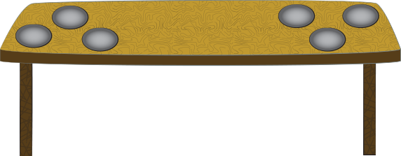

Part 1 - Identification By Hip Bone
Dinosaurs are divided into two categories based on their hip structure.
Click the bone to launch a lesson on identifying Saurischian and Ornithischian hip bones.
x
x
Choose the Dinosaurs
Which of these dinosaurs is a Sauropod? Click on the correct dinosaurs to complete the exercise.



x
Match the Food
Drag the appropriate food to each dinosaur according to their diet. The dinosaurs will only eat from their side of the table!